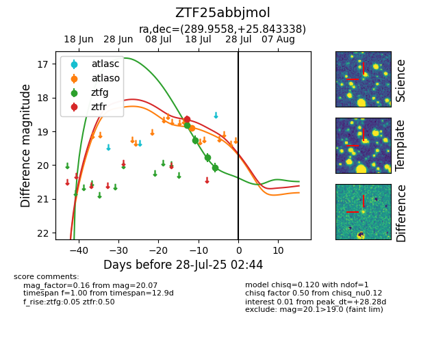

Target ZTF25abbjmol at 2025-07-28 02:44, see:
FINK: fink-portal.org/ZTF25abbjmol
Lasair: lasair-ztf.lsst.ac.uk/objects/ZTF25abbjmol
ALeRCE: alerce.online/object/ZTF25abbjmol
alt names
ZTF25abbjmol (ztf,fink)
coordinates:
equatorial (ra, dec) = (289.9558,+25.84334)
galactic (l, b) = (59.0904,+5.72868)
photometry
last atlaso=18.89, ztfg=20.07, ztfr=18.64
1 atlaso, 4 ztfg, 1 ztfr detections
